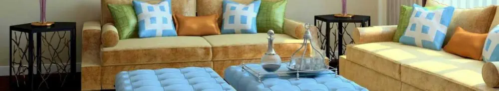

Cara Mempercantik Ruang Tamu dengan Budget Minim: Dekorasi Hemat dan Kreatif
Dipublikasikan pada 23 Oktober 2025

Siapa bilang mempercantik ruang tamu selalu harus mahal? Dengan sedikit kreativitas dan perencanaan belanja yang tepat, kita bisa membuat ruang tamu terasa lebih segar tanpa menguras kantong. Ruang tamu adalah area utama yang memberikan kesan pertama bagi tamu, jadi wajar jika kita ingin menciptakan suasana yang hangat dan nyaman.
Gunakan Dekorasi Sederhana namun Efektif
Salah satu cara hemat untuk mempercantik ruang tamu adalah dengan mengganti sarung bantal sofa. Sarung bantal dengan motif atau warna baru yang sedang tren mudah ditemukan di toko online dengan harga terjangkau. Langkah sederhana ini sudah cukup untuk memberi suasana baru tanpa perlu membeli sofa baru.
Selain itu, menambahkan karpet kecil di bawah meja tamu juga dapat meningkatkan sentuhan estetik. Pilih karpet dengan warna netral atau motif yang simpel agar mudah dipadukan dengan dekorasi lain di ruangan.
Manfaatkan Elemen Alam dan Pencahayaan
Tanaman hias seperti sirih gading, lidah mertua, atau monstera mini bisa membawa nuansa alam yang menyegarkan ke dalam ruangan. Tidak perlu membeli pot mahal; Anda bisa memanfaatkan wadah bekas seperti kaleng atau keranjang rotan sebagai pot unik.
Perhatikan juga pencahayaan. Ganti lampu putih terang dengan lampu bohlam LED berwarna amber atau warm white (kuning hangat). Cahaya hangat ini bisa menciptakan suasana yang lebih santai dan intim. Anda bahkan bisa menggunakan lampu tumbler yang dipasang di sudut ruangan sebagai dekorasi hemat dan cantik.
Sentuhan DIY yang Personal
Jika Anda punya waktu luang, cobalah proyek DIY (Do It Yourself). Buatlah hiasan dinding sendiri dari bahan murah seperti kayu bekas, kain, atau kertas daur ulang. Karya handmade ini tidak hanya menghemat biaya, tetapi juga memberikan sentuhan personal yang membuat ruang tamu Anda terlihat lebih unik dan berkarakter.
Dengan menggabungkan ide-ide sederhana ini, ruang tamu akan terasa lebih nyaman dan stylish tanpa memerlukan renovasi besar-besaran. Kreativitas adalah kunci, dan dekorasi hemat biaya justru bisa menghasilkan ruangan yang unik dan berkarakter.
Nah berikut ini adalah beberapa video pendek tentang hiasan dinding praktis dengan harga terjangkau yang bisa dijadikan referensi.